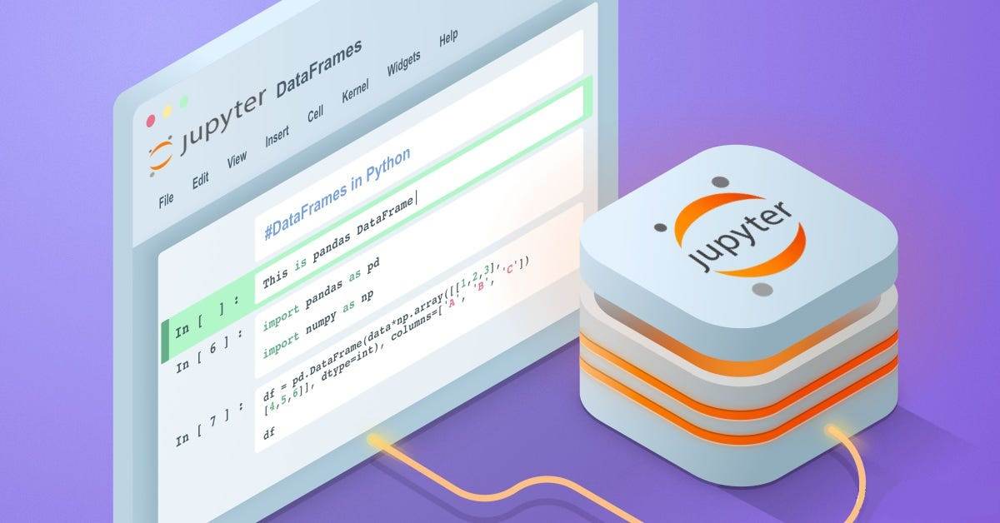

This project incorportates data automation by pulling data from the Crypto public API.
Automating the process required me to use the json, time, and OS libraries in python.
Once I gathered my data I imported the seaborn, matplotlib, and pandas library to clean and
visualize my data. I programmed this entire project through Juypter and documented in PDF format.
Power BI is an interactive data visualization software developed by Microsoft. With Power BI, I can connect disparate data sets, transform and clean the data into a data models
and create charts, graphs, many more visuals with the data primary focus on business intelligence.

Pandas is a software library written for the Python programming language for data manipulation and analysis. In particular,
it offers data structures and operations for manipulating numerical tables and time series. This project includes pulling
the weather api, building dataframes/series, and data cleaning. I programmed this entire project through Juypter and documented in PDF format.

Python is a very power programming language created by Guido van Rossum. With python I have
created many projects utilizing tkinter UI functionalites and other Libraries such as Turtle and Random. I've created a program that will act as a password manager, Color extractor, Pomodoro, and many more!